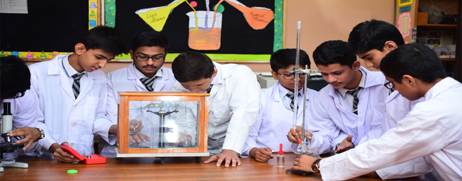
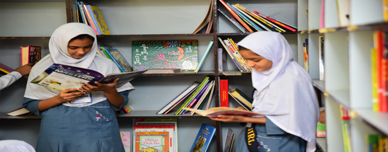

(+92)-21-36689462, (+92)-21-36608876
|
| For Inquiry Please Call (+92)-21-36689462, (+92)-21-36608876 |
| Home | About SSCA | Academics | Admissions | Student's Life | News & Media | SSCA Cloud | Contact Us | Support |
| Matric System | Home | > | Academics | > | Matric System |
| 
Matric System Secondary School ProgrammeClass VI - Class X SSCA secondary school programme consists of modern educational standards. The school has been registered and recognized long ago by the board of secondary education. A very scientific and latest curriculum in class VI onwards. The faculty for the secondary classes is highly qualified, experienced and dedicated. Science and Computer Labs SSCA is equipped with the best school laboratories in Karachi. All of our secondary campuses have a stage of the art computer lab with advanced systems supported by internet connections and a fully equipped science lab, especially designed to cater for educational needs and to excite research abilities in students. Matric Examination Results ALHAMDULILLAH, SSCA's matriculation/SSC Examinations result are 100%. Amazingly our ratio of high achievers in a group is even higher than many reputable institutions in Karachi. It has been rated one of the few top schools' Even passing year the ratio of excellence is increasing gradually. SSCA's constantly improving progress reflects ambition, commitment and hard work of our team. 
School Term
|
|
Copyright © 2020, SSCA All Rights Reserved Powered By: Spectrum Tech & IT Comany |